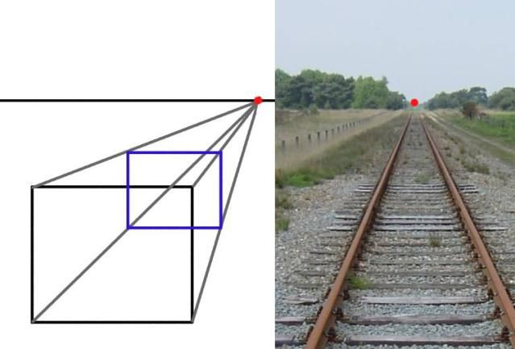
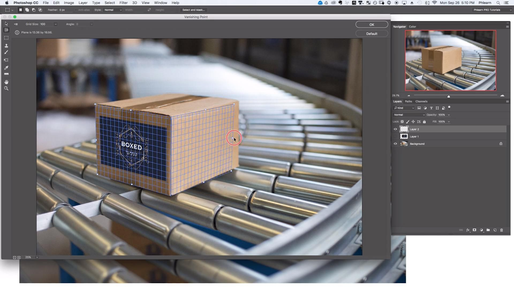
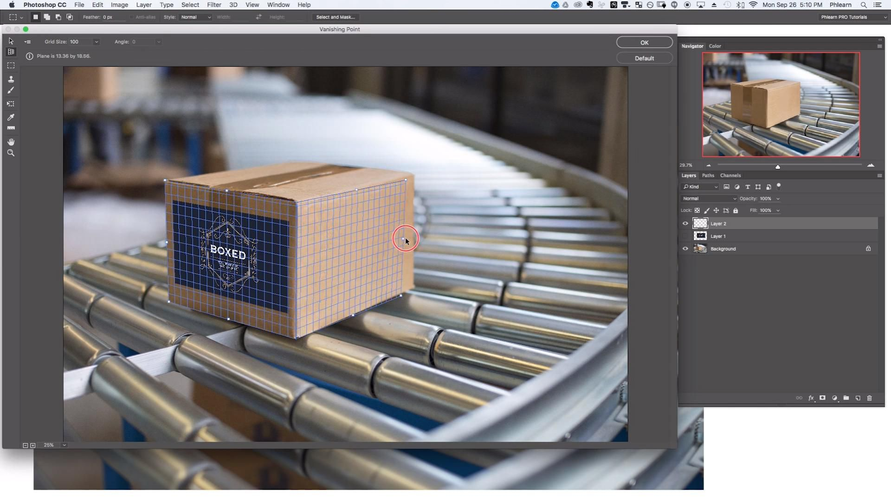
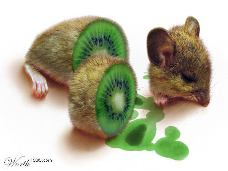
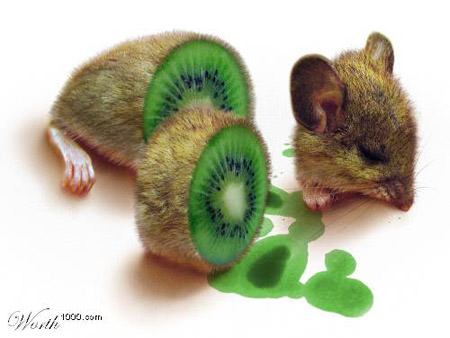
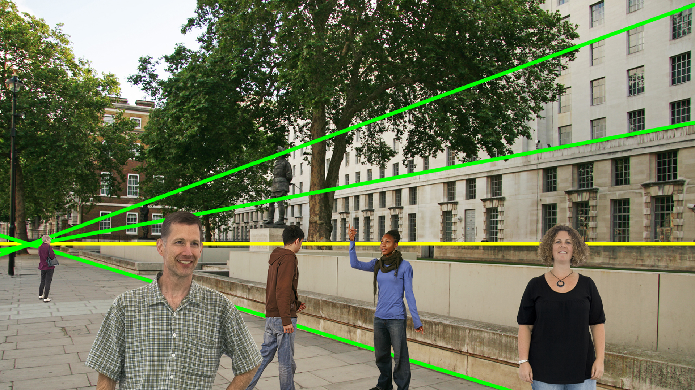
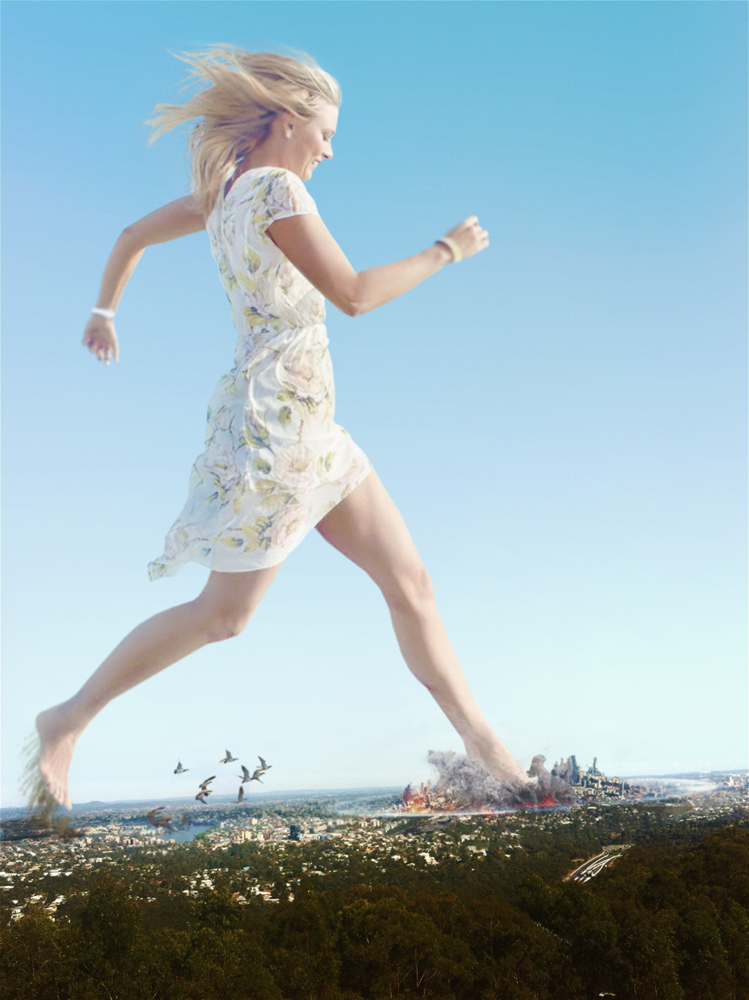
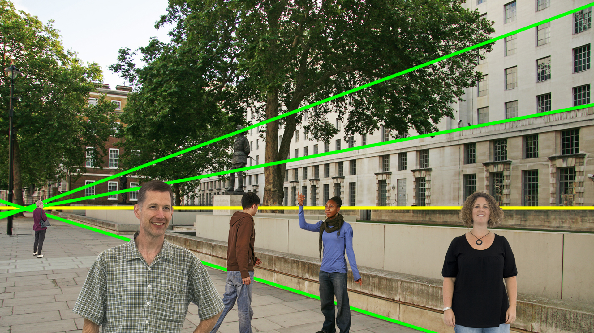
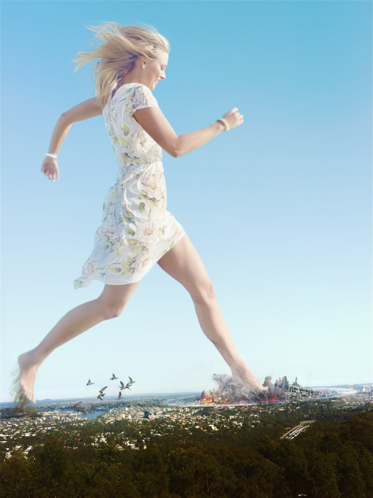

Welcome - Resources - Tools - The Cowboy Trick - Vanishing Point - Post Processing

The Vanishing Point
Where did she go? Oh, there they are.
What is the vanishing point?

A vanishing point is a point on the image plane of a perspective drawing where the two-dimensional perspective projections (or drawings) of mutually parallel lines in three-dimensional space appear to converge. When the set of parallel lines is perpendicular to a picture plane, the construction is known as one-point perspective, and their vanishing point corresponds to the oculus, or "eye point", from which the image should be viewed for correct perspective geometry. Traditional linear drawings use objects with one to three sets of parallels, defining one to three vanishing points.
Vanishing Point simplifies perspective-correct editing in images that contain perspective planes—for example, the sides of a building, walls, floors, or any rectangular object. In Vanishing Point, you specify the planes in an image, and then apply edits such as painting, cloning, copying or pasting, and transforming. All your edits honor the perspective of the plane you’re working in. When you retouch, add, or remove content in an image, the results are more realistic because the edits are properly oriented and scaled to the perspective planes.
With the Vanishing Point filter, you can easily add additional elements to any type of artwork that is composed of flat planes. With this filter, you first define the planes in an image, and then apply edits by painting, cloning, copying, pasting, and transforming your image. The planes you define control the perspective of the edits you make, giving your image a realistic perspective effect.
Photoshop is recommended for this part. GIMP and other common programs can follow this part.
If you are going into the industry, remember to credit what you're collaging if its copyrighted.
How do you do it?
The thing is, this is NOT a tool in any art program. There may be ones to assist you using it but not finding it. Finding the vanishing point within images, you're suppose to find multiple mututal parallel lines within two images and then match both together.
Another "eyeballing" thing in art may sound annoying as two images may not share the same angles but you must find one that looks similar enough. Not everyone can use two images and force its way to share the same vanishing point.
When you do find two images sharing the same vanishing point, try to match the angle. Within that angle, you can only move it horizontally or through a slope now. You will have to combine tools such as cutting off the object needed to place them in the same area.
Post-processing helps A LOT to help that image fit within another layer even more by changing its color source, relighting and placing shadows.
Inspirations to help you!


 

 

 


